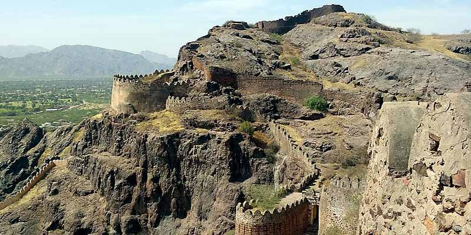
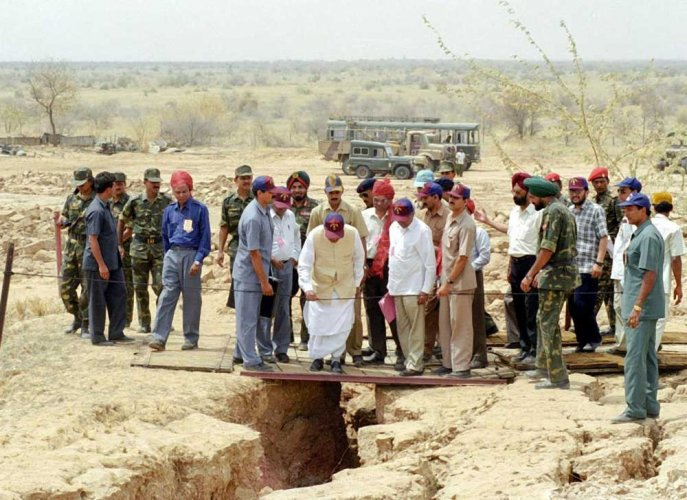
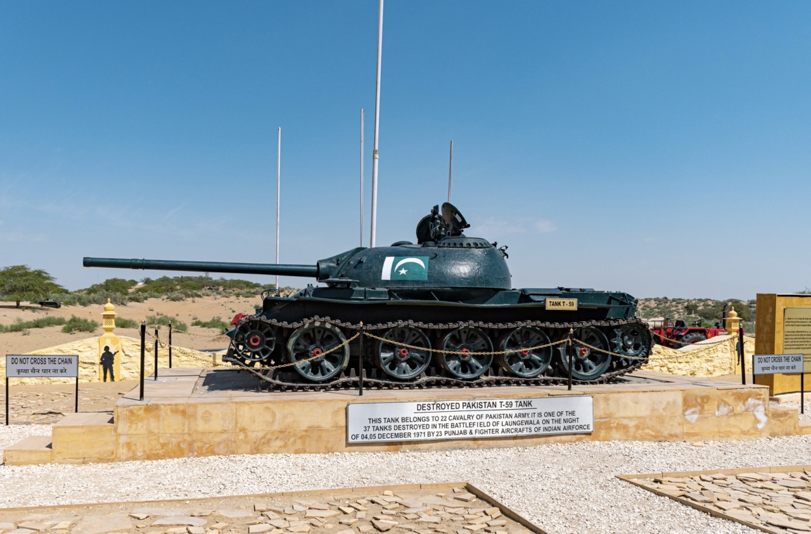

WORLD THROUGH
TRAVEL
Rajasthan
1 Jaipur
Jaipur, formerly Jeypore, is the capital and largest city of the Indian state of Rajasthan. As of 2011, the city had a
population of 3.1 million, making it the tenth most populous city in the country. Jaipur is also known as the Pink City,
due to the dominant colour scheme of its buildings. It is also known as the Paris of India, and C. V. Raman called it the I
sland of Glory. It is located 268 km (167 miles) from the national capital New Delhi. Jaipur was founded in 1727 by the
Kachhwaha Rajput ruler Jai Singh II, the ruler of Amer, after whom the city is named. It was one of the earliest planned
cities of modern India, designed by Vidyadhar Bhattacharya. During the British Colonial period, the city served as the
capital of Jaipur State. After independence in 1947, Jaipur was made the capital of the newly formed state of Rajasthan.
 Save My Trip
Save My Trip
2 Barmer
Barmer is a district in the western state of Rajasthan, India. It is located in the Thar Desert region and shares its borders
with Pakistan. Barmer is the second largest district in Rajasthan in terms of area. The district headquarters is the city of Barmer.
Barmer is known for its rich cultural heritage, historical monuments, and traditional arts and crafts. The region is primarily
inhabited by the Rajput community. The economy of Barmer is predominantly agrarian, with agriculture and animal husbandry being t
he main occupations of the people. The district is also rich in mineral resources, particularly oil and natural gas, and has several
oil and gas fields.Barmer has various tourist attractions, including historical forts, temples, and natural landscapes. Some notable
places to visit in Barmer include the Barmer Fort, Kiradu Temples, Mahabar Sand Dunes, Nakoda Jain Temple, and Khed Temple.

Save My Trip
3 Pokhran
Pokhran is a town located in the Jaisalmer district of the Indian state of Rajasthan. It is situated in the Thar Desert region
of western Rajasthan. Pokhran gained international recognition primarily due to its association with nuclear testing conducted
by the Indian government. In May 1974, India conducted its first nuclear test, code-named "Smiling Buddha," in the vicinity of
Pokhran. It marked India's entry into the nuclear club, becoming the sixth nation to successfully develop nuclear weapons. The
test site in Pokhran is known as the Pokhran Test Range.Apart from its significance in nuclear history, Pokhran also has cultural
and historical importance. The town is known for its historical monuments, including Pokhran Fort, which dates back to the 14th
century. The fort is renowned for its architectural grandeur and serves as a testament to the region's rich history.

Save My Trip
4 Longewala
Longewala is a border village located in the westernmost part of the Indian state of Rajasthan. It is situated in the Thar Desert,
close to the India-Pakistan border. Longewala gained significant historical importance during the Indo-Pakistani War of 1971.
During the war, the Battle of Longewala took place, in which a small detachment of Indian soldiers successfully defended the village
against a much larger Pakistani force. The battle is well-known for the heroic efforts of the Indian soldiers, who held their ground
and repelled the Pakistani attack with limited resources and support. The story of the Battle of Longewala has been immortalized in
books and movies, including the popular Bollywood film "Border."Today, Longewala serves as a memorial site and a symbol of the bravery
and resilience of the Indian armed forces. Visitors can explore the Longewala War Memorial, which pays tribute to the soldiers who
fought in the battle. The memorial displays military equipment and artifacts from the war, providing insights into the historic events
that unfolded in the region.

Save My Trip